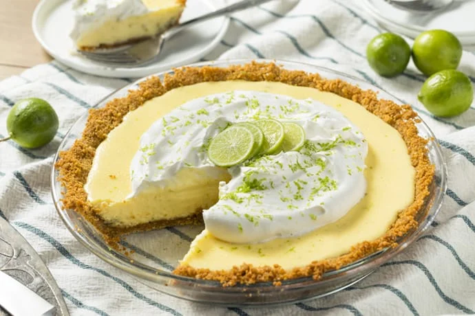

Ingredients
- Graham Cracker Crust
- 11 full-sheet graham cracker
- 2 tablespoons granulated sugar
- 5 tablespoons unsalted butter, melted
- Filling + Topping
- 28 ounces (2 14-ounce cans) full-fat sweetened condensed milk
- 1 cup key lime juice
- 4 large egg yolks
- 1 teaspoon key lime zest
- garnish: lime zest, quartered lime slices, or whipped cream
Instructions
- Preheat oven to 350°
- Make the Crust
- Using a food processor, pulse the graham crackers into coarse crumbs.
- Pour into a medium bowl and stir in the sugar.
- Add the melted butter and stir until combined. The texture will be thick, coarse, and sandy.
- Pour the mixture into an ungreased 9-inch pie dish. Use your hand to pat down the crumbs into the bottom and up the sides to make a crust.
- Pre-bake crust for 8 minutes. Remove from the oven and leave the oven on.
- Make the Filling
- Whisk the sweetened condensed milk, lime, juice, and egg yolks together. Whish in the lime zest.
- Pour into warm crust.
- Bake the Pie
- Bake the pie for 18-20 minutes or until only *slightly* jiggly in the center. You want it mostly set.
- Remove from the oven and allow to cool completely on a wire rack.
- Once cool, cover and chill for at least 1 hour before serving.
- Garnish as desired.
Key Lime Pie Instruction Video
Want to Know More?
Here's a graph of all the ingredients being used around the world!

Top of Page